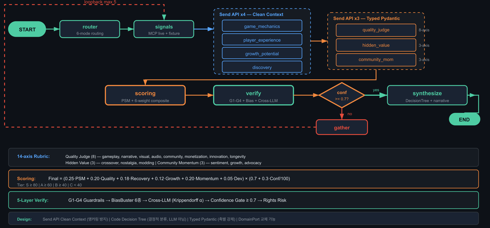

HE-2: DOMAIN
단일 LLM 평가의 편향을 병렬 전문가 4명 + 교차 검증 + PSM으로 극복합니다.

Scoring Formula (adapter.py:91-98)
base = 0.25·PSM + 0.20·Quality + 0.18·Recovery
+ 0.12·Growth + 0.20·Momentum + 0.05·Dev
final = base × (0.7 + 0.3·conf/100)
Tier 기준
S ≥ 80 · A ≥ 60 · B ≥ 40 · C < 40
D-E-F 축 코드 결정 트리 (LLM 아님)
설계 결정 — Clean Context: 앵커링 편향 차단
"Analyst A의 S급 평가가 Analyst B를 편향시킵니다." 각 분석가에게 analyses: []로 전달 — 다른 분석가 점수 완전 차단. 7개 병렬 LLM 호출에서 독립 평가 보장.
Fixture Results — Golden Set 검증
S
81.2
Berserk
conf: 0.89 · bias: 0/6
cause: conversion_failure → marketing_boost
A
68.4
Cowboy Bebop
conf: 0.85 · range: 63-75
cause: undermarketed → community_activation
B
51.7
Ghost in the Shell
conf: 0.72 · range: 48-60
cause: discovery_failure → platform_expansion
5-Layer 검증 (N4)
L1 Guardrails — 스키마·범위·근거·일관성
L2 BiasBuster — 6종 편향 탐지 (arXiv:2403.00811)
L3 Cross-LLM — Claude×GPT α≥0.67
L4 Rights Risk · L5 Calibration 80/100
14 rubric axes (8+3+3) · 6 cause classes · PSM Rosenbaum Gamma · conf gate loopback ≥0.7 · max 5 iterations
18 / 24